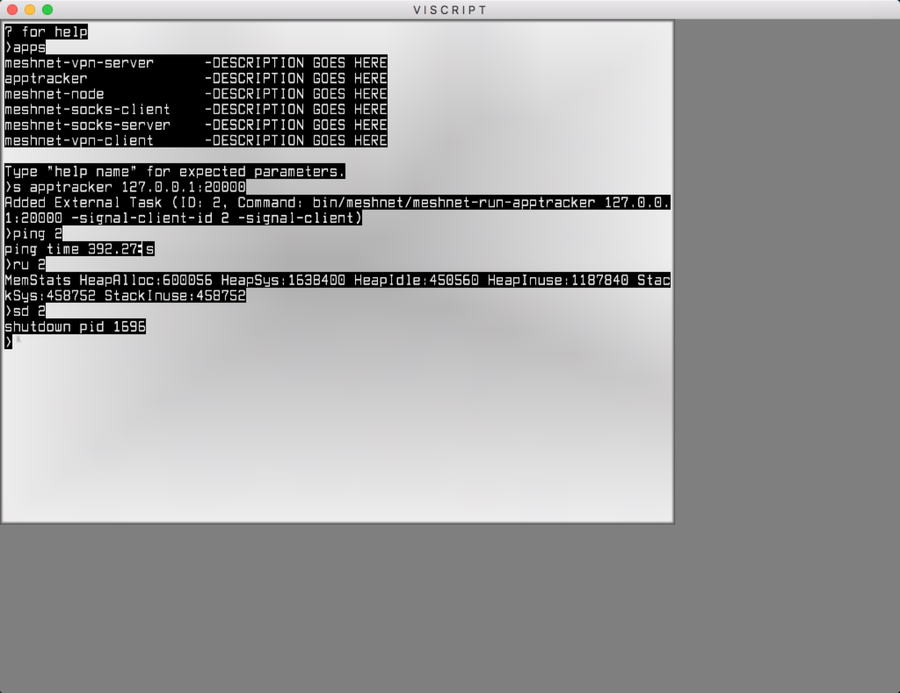
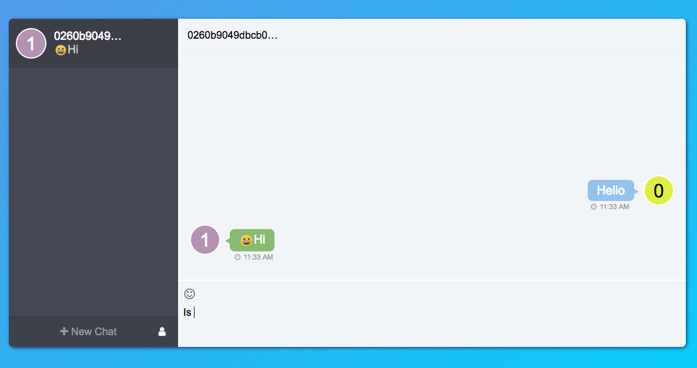

介绍Viscript
Viscript
Viscript 是一个跨平台脚本语言，用于应用程序启动器和集群管理。 它有一个基于信号库的信号服务器，因此可以管理信号客户端，如节点和Skywire中的组件。 它可以在GUI模式或无头模式(注：无头模式意味没有显示器、键盘、鼠标等）下运行。
Viscript GUI Screenshot:

我们可以在config.yaml文件中添加应用程序配置，比如meshnet-socks-server：
meshnet-socks-server:
daemon: true
desc: DESCRIPTION GOES HERE
path: bin/meshnet/meshnet-run-socks-server
default_args: []
help: |
[1] Text name of app, must be unique
[2] Node address which app will be talked with. ex 101.202.34.56:9000
[3] Port which socks server will use for connecting with target host. ex 8000
Full Example Command:
start meshnet-socks-server sockssrv0 101.202.34.56:9000 8001
重启viscript后，我们可以通过命令应用检查那些通过viscript启动的应用程序。
正如你可以在屏幕截图中看到的，我们可以使用短命令（apptracker 127.0.0.1:20000）启动应用程序。
viscript使用唯一的序列号ID启动，我们可以用ping（ping）ID检测存活状况，也可以通过ID来检查资源利用（ru）状况，关闭（sd）服务等。
Skywire
Skywire 是一个点对点的对等替代网络，用于从ISP获得网络的控制权，并将其返回给用户。 它内部有以下几个组件：节点管理器，节点和应用程序，如vpn客户端，vpn服务器，socket客户端，socket服务器等，节点和应用程序都运行在在网状网上。
Skywire内的所有组件均基于信号库开发有信号客户端。 所以他们可以通过viscript来启动，管理和关闭。
架构
架构关系图：
+-----------+-------------+
+---------------^-----+ | vpn | socks |
| managed by | +-----------+-------------+
| <-----+ | node |
v | +-------------------------+
<-----+ | node manager |
+-------------------+ | +-------------------------+
| viscript | +-----+ | messenger |
+-------------------+--------------+-------------------------+
| signal |
+------------------------------------------------------------+
| net |
+------------------------------------------------------------+
每个服务都有客户端和服务器端程序，如vpn客户端和vpn服务器。 它们运行在Skywire网状网络上。 我们知道，Skycoin是Skywire的货币，当用户转发流量或提供网络资源时，他或她收到Skycoin。 同样，当用户消耗网络资源或媒体时，他或她也会花费Skycoin。 一旦实施了计量和结算网络资源消耗，Skywire将产生用于操作网络的代币Skycoin。
节点，节点管理器和Messenger是Skywire网状网的关键组件。 节点是对等网格节点。 服务程序将注册到Node，其流量将由Node转发。 节点管理器管理网状网中节点之间的路由。Messenger允许用户通过公钥在点对点群集间通信。 它们是Skywire网状网的基石。
总结
Viscript和Skywire仍处于密集开发阶段。 但是，我们已经在Skycoin生态系统中取得了许多令人兴奋的里程碑成果， 而且我们正在享受，并将在未来充分发挥自由互联网的潜力！
Sky-Messenger screenshot:
